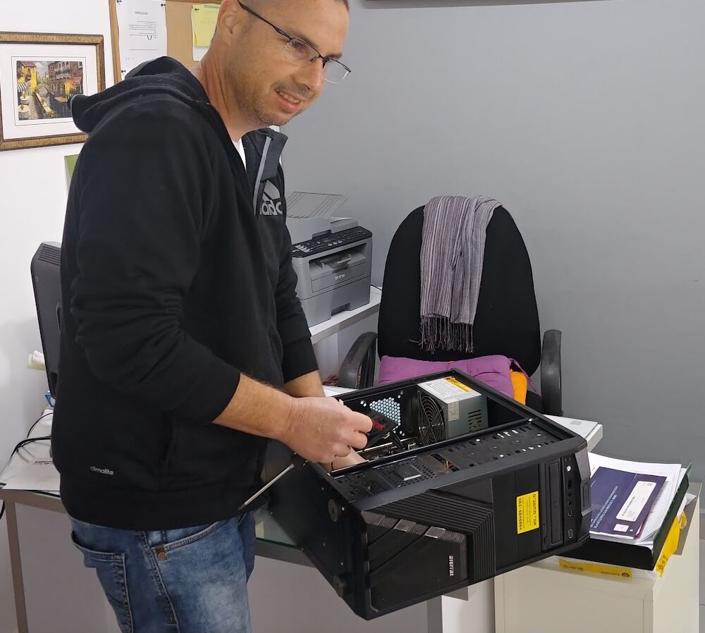
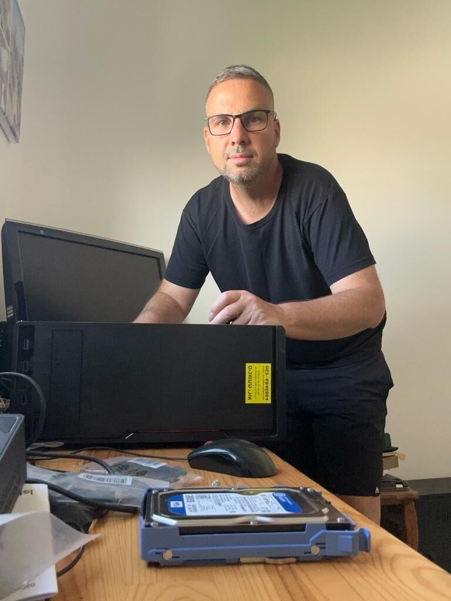
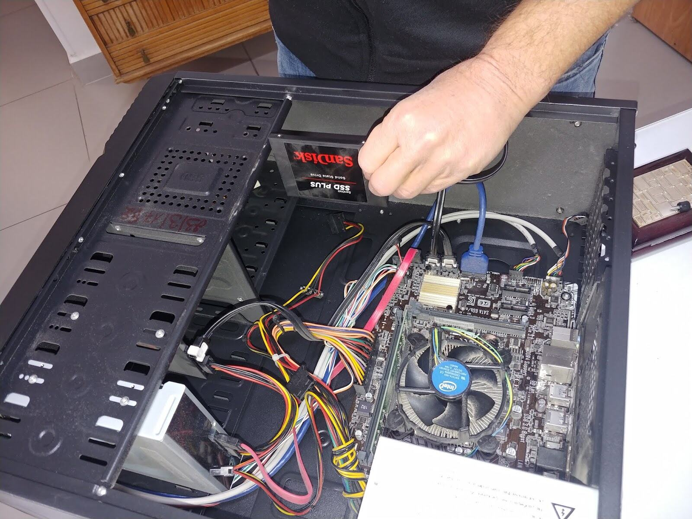

ביקור בביתHome visits
אורי מגיע לשולחן שלכם.Uri comes to your desk.
תמונה להמחשה: קריית מוצקין מהאווירIllustrative: Kiryat Motzkin from the air
קונספט לדוגמה שנבנה עבור אורי מחשבים · זה אינו האתר הרשמי של העסקA sample concept built for Uri Computers · This is not the business’s official website
אורי מחשבים, קריית מוצקין: תיקון, החלפה ושדרוג. אצלכם בבית או מרחוק.Uri Computers, Kiryat Motzkin: repairs, replacements and upgrades. At your home or remotely.


תיקון, החלפה ושדרוג, חלק אחרי חלק.Repairs, replacements and upgrades, part by part.

בבית, במשרד, ודרך המסך.At home, at the office, and over the screen.
אורי מגיע לשולחן שלכם.Uri comes to your desk.
תמונה להמחשה: קריית מוצקין מהאווירIllustrative: Kiryat Motzkin from the air
עזרה דרך המסך, בלי לצאת מהבית.Help over the screen, without leaving home.
נבחר לפי מה שאתם צריכים.Chosen around what you need.
בחירה, התקנה ובדיקה.Choosing, installing, checking.
טיפול בכולם, לאורך שנים.Looking after all of them, for years.
מ-16 ביקורות בגוגלfrom 16 Google reviews
״במשך שנים אורי מתחזק את כל המחשבים שלי. לכל תקלה מוצא פתרון מהיר ומציע חלופות לבחירתי.״
“For years Uri has looked after all my computers. He finds a quick fix for every fault and offers me options to choose from.” (translated)
״כאשר המדפסת המשולבת שלי שבקה חיים הסתייעתי בו על מנת לבחור מדפסת. אורי הגיע לביתי, התקין את המדפסת, בדק שהכל תקין.״
“When my all-in-one printer died, I asked him to help me choose one. Uri came to my home, installed the printer and checked everything worked.” (translated)
״המחשב הנייח שלי התקלקל ולא נדלק. פניתי לאורי מחשבים וקיבלתי מענה מהיר ומקצועי.״
“My desktop broke down and wouldn’t turn on. I contacted Uri Computers and got a quick, professional response.” (translated)
״אין על אורי, איש צנוע ונחמד. גם הגון וגם מקצועי.״
“Nobody beats Uri, a modest and kind man. Honest and professional.” (translated)
כן, שירות עד הבית הוא חלק מהעבודה שלו.Yes, home service is part of his work.
כן, בשליטה מרחוק על המחשב, דרך האינטרנט.Yes, by remote access to your computer, over the internet.
כן, מחשבים חדשים שמותאמים למה שאתם צריכים.Yes, new computers matched to what you need.
ראשון עד חמישי 8:00–20:00, שישי 8:00–13:00. בשבת סגור.Sunday to Thursday 8:00–20:00, Friday 8:00–13:00. Closed on Saturday.